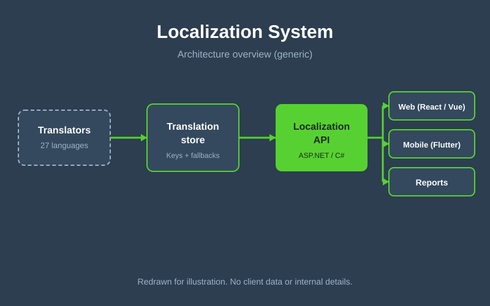

The problem
The organization's health information systems are used by about 2,000 people across 49 countries and about 1,300 facilities, working in many different languages. Interfaces in a single language created friction for users and risked data-entry errors, and managing translations separately in each application would not scale.
Approach
- One system for every app: built a central localization layer so web (React, Vue) and mobile (Flutter) apps share the same translations instead of each keeping its own.
- 27 languages: text is stored as keys with a translation per language and a fallback when one is missing, so an untranslated string never leaves a blank screen.
- Served from the backend: ASP.NET / C# APIs backed by SQL Server deliver the right language for each user.
- Designed for it: responsive layouts and accessible components that cope with longer text and different scripts.
Architecture

Generic redraw for illustration. It contains no client data, hostnames or internal schema.
Scale & outcome
27languages
49countries
~1,300facilities
~2,000active users
Users get the applications in their own language, and new languages or screens are added in one place rather than in every app.
Challenges & decisions
- Consistent terminology: kept health and reporting terms identical across languages and apps.
- Layouts that flex: translations vary a lot in length, so screens were built to adapt instead of assuming English text widths.
- Graceful gaps: a fallback language keeps apps usable while a translation is still being completed.
What I'd do next
Add a translator-friendly editing interface with review workflow, automated checks for missing or mismatched keys, and machine-translation suggestions that a human reviews.